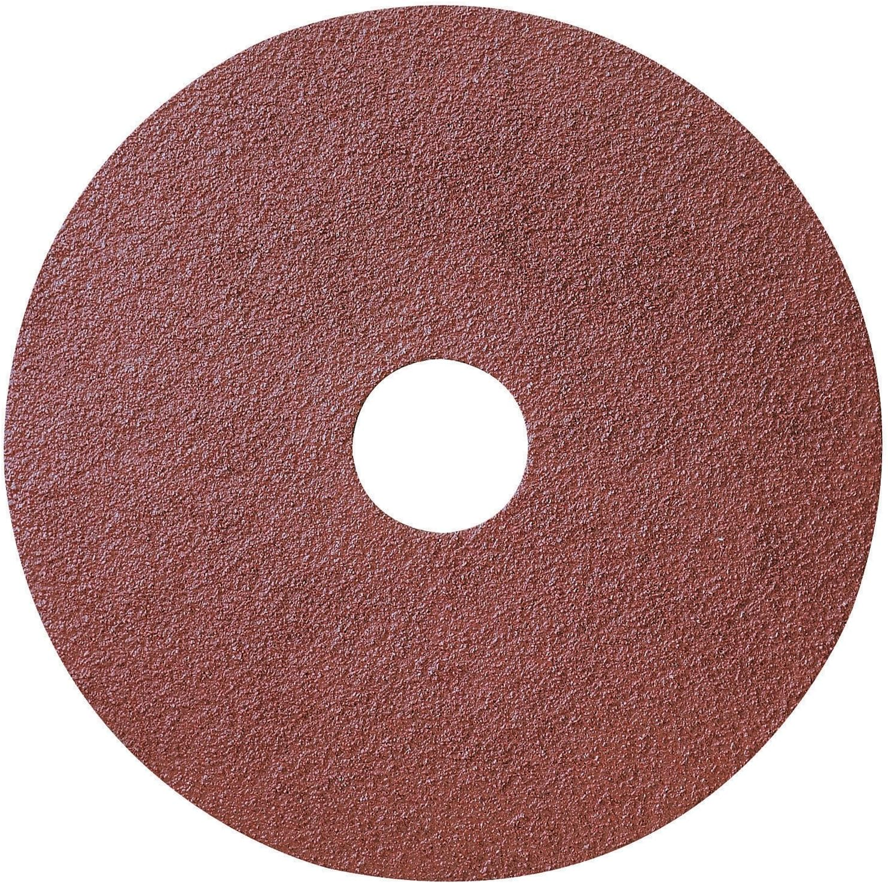

Best Drill Bits for Metal of 2026
Our Top Picks
| Pick | Model | Material | Price | Best For |
|---|---|---|---|---|
| 🏆 Best Overall | DeWalt DW1263 | HSS + Black Oxide | $24 | Everyday metal drilling |
| 💰 Best Budget | Bosch BL21A | HSS + Black Oxide | $15 | Occasional use, mild steel |
| 🔧 Best for Hardened Steel | Drill America DWAECS9 | M42 Cobalt | $49 | Stainless, cast iron, hardened steel |
| 🏭 Best for Production | Irwin 3018002 | M35 Cobalt | $35 | Shop use, high volume |
Why Your Drill Bits Matter More Than Your Drill
A $200 drill driving a dull $3 bit is worse than a $69 Ryobi with a sharp cobalt bit. The bit touches the material. The drill just spins it. Yet most people buy the cheapest set on Amazon and wonder why they smoke through three bits per hole.
Drilling metal isn't like drilling wood. Metal fights back. It heats up. It work-hardens. The wrong bit — or a dull one — will skate across the surface, overheat, and turn your workpiece into a blued, ruined mess. The right bit cuts clean, stays cool, and lasts hundreds of holes.
Comparison Table
| Set | Material | Sizes | 135° Split Point | Price | Rating |
|---|---|---|---|---|---|
| DeWalt DW1263 | HSS + Black Oxide | 14-pc (1/16"–1/2") | ✅ | $24 | ★★★★★ |
| Bosch BL21A | HSS + Black Oxide | 21-pc (1/16"–3/8") | ✅ | $15 | ★★★★☆ |
| Drill America DWAECS9 | M42 Cobalt | 29-pc (1/16"–1/2") | ✅ | $49 | ★★★★★ |
| Irwin 3018002 | M35 Cobalt | 29-pc (1/16"–1/2") | ✅ | $35 | ★★★★★ |
| DeWalt DW1361 (Titanium) | HSS + TiN Coated | 21-pc | ❌ | $22 | ★★★☆☆ |
| Milwaukee 48-89-4630 | HSS + Black Oxide | 29-pc | ✅ | $30 | ★★★★☆ |
Best Overall: DeWalt DW1263

DeWalt DW1263 14-Piece Black Oxide Drill Bit Set
HSS · 135° split point · 1/16"–1/2" · Black oxide finish · Metal index case
Check price on Amazon →The DeWalt DW1263 is the Goldilocks set: not the cheapest, not the most expensive, but the one that covers 95% of what most people need to drill into metal. Fourteen sizes from 1/16" to 1/2" in 1/64" increments — the spacing means you always have the right size for a pilot hole before tapping.
What we like
- 135° split point — no center punch needed on most steel
- Black oxide retains cutting oil well
- Metal index case keeps bits organized and protected
- Good size coverage for the money
What we don't like
- Not cobalt — will dull faster in stainless and hardened steel
- 14-piece set skips some niche sizes
- Black oxide finish wears off after heavy use
Best Budget: Bosch BL21A
At $15 for 21 pieces, the Bosch BL21A is proof you don't need to spend money to drill clean holes in mild steel. The 135° split point means no walking on flat surfaces. The sizes run from 1/16" to 3/8" — enough for most home and automotive work. The downside: black oxide HSS won't last in stainless or hardened steel. This is a mild steel set. Use it for mild steel and it'll serve you well.
Best for Hardened Steel: Drill America DWAECS9
M42 cobalt is the step up. Cobalt is alloyed into the steel at 8%, making the bit harder and more heat-resistant than standard HSS. The Drill America set uses M42 — the highest cobalt content you can get in a consumer drill bit — which means it'll cut stainless steel, cast iron, and even hardened alloy steels without dulling in three holes.
⚠️ Cobalt bits are more brittle than HSS
They stay sharp longer but will snap rather than bend. Use a drill press or keep your hand steady. Don't use them in a wobbly hand drill at an angle.
How to Choose Drill Bits for Metal
135° split point always
A standard 118° point will walk across metal unless you use a center punch. A 135° split point self-centers — it bites instantly without a pilot mark. For metal, always get 135°.
HSS for mild steel. Cobalt for stainless.
HSS is fine for mild steel, aluminum, brass, and plastic. If you regularly drill stainless steel, hardened steel, or cast iron, pay the extra for cobalt (M35 or M42). Titanium-coated bits look fancy but the coating wears off after a few holes — we don't recommend them.
Use cutting oil
Metal-on-metal friction generates heat. Heat kills bits. A drop of cutting oil (or even 3-in-1 oil) on the bit before every hole will double its lifespan. No oil, no mercy from the metal.
Slow speed, firm pressure
The harder the metal, the slower the drill speed. For steel, 500-800 RPM. For stainless, 300-400 RPM. Let the bit do the work — don't lean on it. If you see smoke, stop and add oil.
The Bottom Line
For 90% of people drilling metal at home or in a garage, get the DeWalt DW1263. It's sharp out of the box, self-centering, and covers every common size. If you regularly drill stainless or hardened steel, step up to the Drill America M42 Cobalt set. And no matter what you buy — use cutting oil.
FAQ
Can I use wood drill bits on metal?
No. Wood bits have a different tip geometry (brad point) and are made of softer steel. They'll overheat instantly on metal and may shatter. Use bits labeled HSS or cobalt, with a 135° split point.
What's the difference between black oxide, titanium, and cobalt bits?
Black oxide is a surface treatment on HSS — rust-resistant, holds oil well. Titanium is a thin coating — looks gold, wears off quickly. Cobalt is alloyed through the entire bit — stays sharp longest, costs more, slightly more brittle. For metal, skip titanium. Black oxide for mild steel, cobalt for stainless.